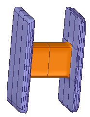
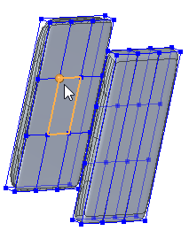
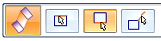
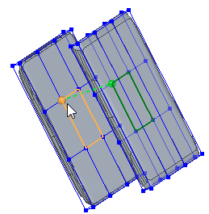
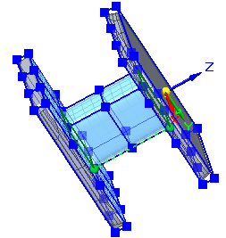
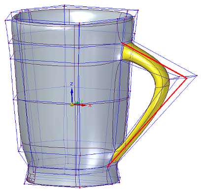
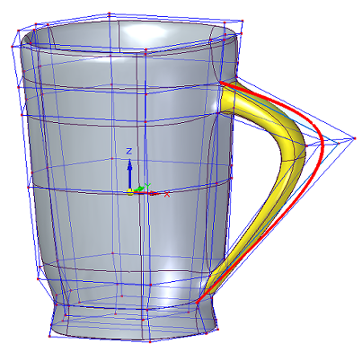

Connect cage faces or edges with a bridge
In the Subdivision Modeling environment, you can use the Bridge command to connect faces or edges, for example, to connect two cage bodies or to add a handle-like feature.

Define a bridge
-
In the Subdivision Modeling environment, select the Home tab→Modify group→Bridge command .
-
On the command bar, the From Section step is active, so you can define the start section of the bridge. Set the Selection method to Chain or to Single, and then click one or more contiguous edges or faces. Click Accept or right-click to continue.

If you select edges, they must be endpoint-connected; if you select multiple faces, they must be connected along one edge.
As the initial edge or face is selected, a vertex point and dashed line indicate the starting point and direction of the bridge definition. To move the starting point, click Cancel on the command bar to restart the step, and then click a different vertex.
-
The To Section step is active, so you can define the end section of the bridge. Do either of the following:

-
To define a single-section bridge that does not connect to a body, right-click or press Enter to skip this step.
-
To define the second bridge section, click a face or one or more contiguous edges. Click Accept or right-click or press Enter to continue.

Tip:-
You can select edges for one end of the bridge and faces at the other, as long as the number of edges to be connected is the same and both sets are either closed or open.
-
To avoid creating a twisted bridge, select the ending face or edge so that the direction vertex is directly opposite the direction vertex on the start section.
A preview of the bridge is displayed showing the inputs to this point.

-
-
The Shape Curve step is active, so you can select sketch elements to control the shape of a one-sided bridge or a two-sided bridge.
To skip this step, right-click or press Enter. Otherwise, select the sketch elements to define the bridge path.
-
To define a curved path, click a single sketch curve element.
-
To define a linear path, enter the number of segments in the Segments box on the command bar, and then click one or more endpoint-connected linear sketch elements, or click the edges of existing body cages.
The shape curve must be connected to an edge or vertex on the face, or face set, or edge set in the start and at the end sections of the bridge.
Example:This handle was defined using the default value Segments=2 and selecting two linear sketch elements.

This handle was defined by selecting a single sketch curve.

-
-
To finish the feature, click Accept on the command bar, and then right-click to end the command.
Edit a bridge
The Bridge command adds a set of connected faces to the subdivision body it modifies. It does not create a new feature in PathFinder. To edit the bridge, you can use Undo and Redo commands, or you can select the Delete command on the shortcut menu to delete it, and then recreate it.
How do I
Subdivision Modeling workflowMove cage elements
Move using Quick Move
Use symmetric mode in Subdivision Modeling
Scale a subdivision model
Split subdivision model faces
Split faces with offset
Offset cage faces
Delete and fill cage faces
Align a shape to a curve
Learn more
Introduction to Subdivision ModelingUsing PathFinder with subdivision models
Working with cage elements
Creating subdivision features
Working with subdivision features
Moving and rotating cage elements
Look up more details
Subdivision Modeling commandBox command in Subdivision Modeling
Box command bar
Cylinder command in Subdivision Modeling
Cylinder command bar
Sphere command in Subdivision Modeling
Sphere command bar
Torus command
Torus command bar
Scale command in Subdivision Modeling
Blend command
Show Blend Values command
Split command
Split with Offset command
Bridge command
Align to Curve command
Cage Style command